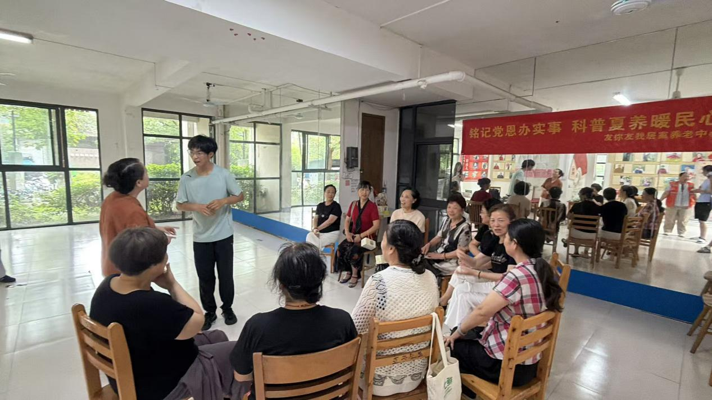
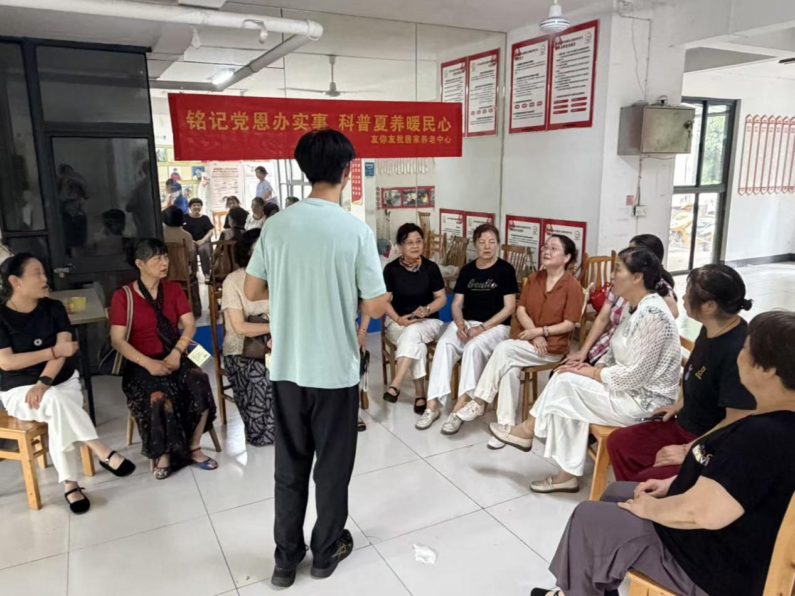
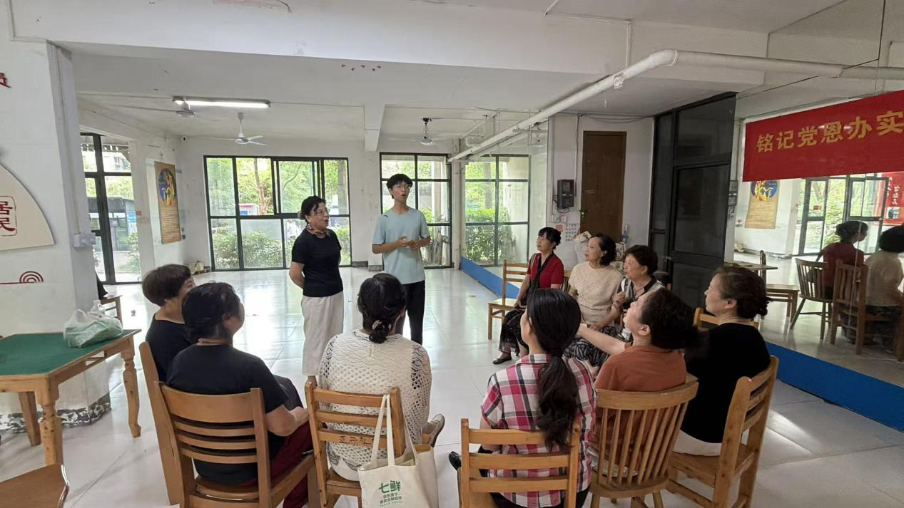

夏日悠长，蝉鸣相伴。为推动传统戏曲文化下沉基层社区，打通非遗文化传播的最后一公里，「数韵梨园」实践团队走进亚东社区，面向社区居民开展戏曲教唱、经典诗词合诵等系列文化活动。活动室里婉转唱腔、朗朗诵读交织在一起，老中青跨代交流，让沉淀百年的梨园雅韵，落进日常烟火邻里之间。
细授唱腔，邻里共品梨园雅趣
本次活动以经典京剧选段《武家坡》作为主要教学内容。团队成员耐心拆解唱腔、咬字、换气细节，台下的社区阿姨们端坐聆听，认真记下演唱要点。从生疏试探到逐渐找准戏曲腔调，大家慢慢沉浸进京剧独特的韵律之中。后续合唱互动环节里，居民和实践队员一同放声演唱，原本隔着舞台的戏曲艺术，化作普通人都能参与、感受的声乐乐趣。 不少阿姨课后和队员交流自己学唱感受，坦言以往大多只在电视上听戏曲，如今亲身学唱，才真切体会到传统唱腔独有的韵味，也燃起了日常居家练习的兴趣。

诗韵融戏，厚植红色情怀
除戏曲教学外，团队增设经典红色诗词合诵环节。大家以诵读传递革命情怀，将铿锵的文字气韵与戏曲的演唱功底相结合。当红色经典和传统戏曲两种文化载体相融，居民们在感受文字力量的同时，也体会到传统文化承载的家国记忆，实现美育与思政教育润物细无声的融合。

以微末之行，做长久传承
整场活动里，最动人的从来不是完美的演唱，而是双向奔赴的热爱：青年学子走出校园，把专业知识转化为普惠社区的文化服务；社区居民敞开心扉接纳非遗，用热忱回应青年的付出。 长久以来，戏曲常被贴上小众、老旧的标签，可本次社区实践给出了新答案：传统文化不必局限于剧场戏台，社区活动室、普通居民的日常闲暇时光，都是文化传承的沃土。青年搭建传播桥梁，中老年居民成为忠实受众与传播者，代际之间完成文化的传递。

结尾
一次社区活动只是文化传播的起点。往后「数韵梨园」团队会继续深入各个社区，依托 AI 数字平台、线下巡回课堂、新媒体传播多条路径，把戏曲文化送到更多居民身边。让梨园余韵飘散街巷，让传统文化扎根烟火日常。